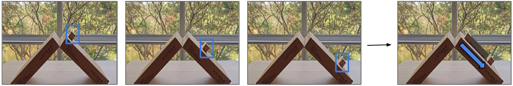
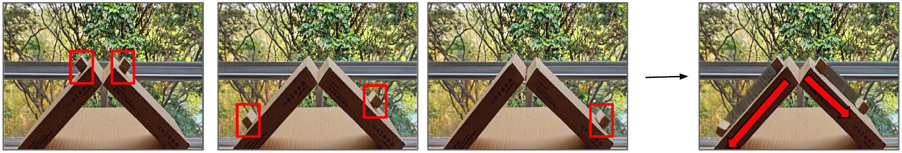
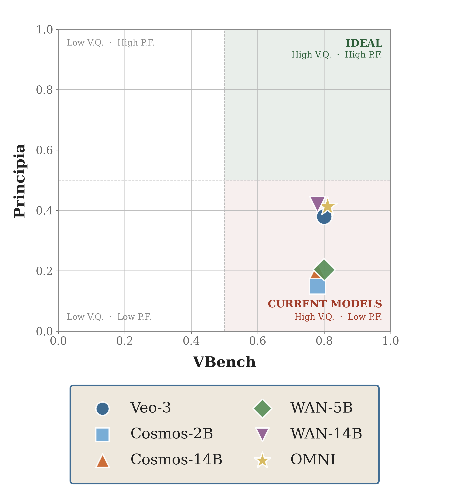
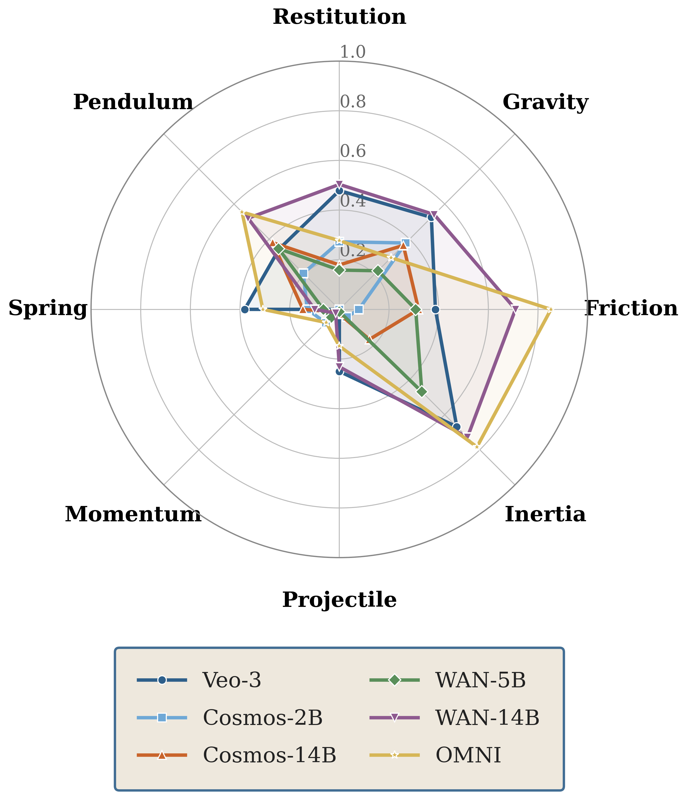
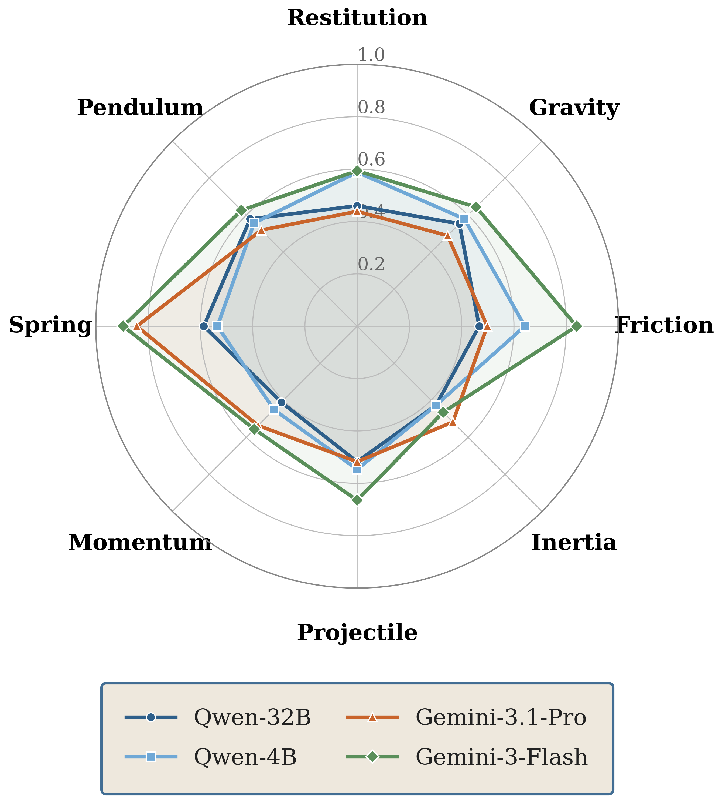

Restitution
1. Wan2.2-14B0.504
2. Veo-3.10.479
3. Omni0.277
4. Cosmos-2.5-2B0.272
5. Cosmos-2.5-14B0.179
6. Wan2.2-5B0.158
1Indian Institute of Science 2Johns Hopkins University
*Equal contribution
Modern video generators produce visually realistic motion, but fail surprisingly simple Newtonian physics tests. Principia evaluates physics using calibration-independent relational constraints between paired objects and finds that no evaluated generator exceeds 0.42 physical consistency despite all scoring above 0.7 on VBench.
Evaluating physical reasoning in video models is difficult because absolute motion measurements depend on frame rate, object scale, and camera calibration, all of which are often ambiguous or unavailable in generated video. We propose a different approach. When two objects in the same scene obey the same physical law, their motions must satisfy predictable relationships, and these relationships hold independent of calibration. We introduce Principia, a benchmark that evaluates Newtonian physics through relational consistency between paired objects.
Principia spans eight phenomena—gravity, restitution, friction, rotational inertia, projectile motion, momentum, pendulum, and mass–spring oscillation—across translational, rotational, collisional, and oscillatory dynamics, using real-world scenes recorded under controlled protocols. We also introduce a calibration-independent consistency score that quantifies physical violation directly in image space. Across thousands of generations from five state-of-the-art video generators, no model exceeds 0.42 on Principia despite all scoring around 0.8 on VBench. Vision-language models are evaluated on their ability to detect relational physics violations, with the best model achieving only 67% accuracy and most performing near chance level.

A generated video of a single block sliding down an incline, shown at three timesteps and as a stroboscopic composite (right): motion appears plausible.

A generated video of two blocks with different masses released simultaneously on identical inclines, where the blocks arrive at different times, violating the mass-independence invariant of gravitational acceleration. This violation only becomes detectable through comparison.
Each scenario defines a relational invariant that must hold whenever two objects obey the same physical law. Hover a card to preview the invariant; click to inspect the recorded scene.
Principia consistency score for video generators (out of 1.0).
Ranked by consistency score within each physics scenario.
We evaluate both the ability of video generators to produce physically consistent motion and the ability of vision-language models to detect violations of relational physics.
For each phenomenon φ, the invariant defines two scalar quantities F☉(o₁) and F☉(o₂) that should be equal under correct physics. Depending on the phenomenon, these quantities may correspond either to directly measured values (friction) or to ratios derived from the measured values (gravity, spring, restitution, rotational inertia, pendulum).
S☉ equals 1 when the invariant holds exactly and decreases toward 0 as the violation grows. A score of S☉ = 0.9 corresponds to roughly 10% relational asymmetry. The normalization makes S☉ unit-free and bounded in [0, 1].

Visual quality and physical fidelity are largely decoupled. All five video generators score above 0.7 on VBench but below 0.5 on Principia, clustering in the high-visual-quality, low-physics-fidelity region.

Each polygon exhibits a distinct performance profile rather than uniform weakness. Veo-3.1 peaks at inertia and gravity; Wan2.2-14B performs particularly well on friction and pendulum; Cosmos-2.5-2B exhibits a smaller polygon, with its strongest performance concentrated on gravity and restitution. No polygon fills the chart.

VLMs are evaluated on whether they can detect relational physics violations rather than generate physically correct motion. Their polygons are smoother and more uniform than those of the generators, but performance remains limited: three of four models perform near chance level, while the best-performing model reaches only 0.67 average detection accuracy, just above chance.
Select a physics scenario and an example scene to compare generations across all six models.
Each scenario includes a synthetic video that demonstrates the underlying physics invariant and an anti-physics counterpart that violates the invariant.
If you find Principia useful in your research, please consider citing our work.
@misc{thozhiyoor2026principiarelationalphysicstests,
title={Principia: Relational Physics Tests for Video Models},
author={Varun Varma Thozhiyoor and Shivam Tripathi and Venkatesh Babu Radhakrishnan and Anand Bhattad},
year={2026},
eprint={2609.04200},
archivePrefix={arXiv},
primaryClass={cs.CV},
url={https://arxiv.org/abs/2609.04200},
}
@InProceedings{Thozhiyoor_2026_CVPR,
author = {Thozhiyoor, Varun Varma and Tripathi, Shivam and Radhakrishnan, Venkatesh Babu and Bhattad, Anand},
title = {Objects in Generated Videos Are Slower Than They Appear: Models Suffer Sub-Earth Gravity and Don't Know Galileo's Principle...for now},
booktitle = {Proceedings of the IEEE/CVF Conference on Computer Vision and Pattern Recognition (CVPR) Findings},
month = {June},
year = {2026},
pages = {3830--3839}
}